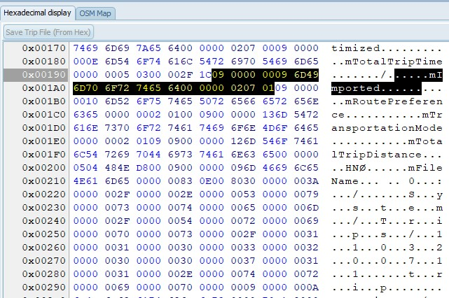

|

|
The Hex view is for getting more insight
into a trip file.
The selection of the Hex view is synched
with the Tree view, or grid. (On the left part)
It is possible to modify the file, and
save it using the button ‘Save Trip File’. Also on the
device. NO recalculation is forced.
|
The OSM shows the selected trip. Shaping
points are blue bullets, Via points are red. Lines between
points are drawn in the color specified in settings. (default:
Magenta) If the trip is calculated lines are drawn between
UdbDir’s and follow the road more precisely. If you select a
Location, or an mUdbDataHndle a popup is shown on the map. You
can add routes/tracks from a gpx to the map as an overlay, to
compare the calculated trip with.
Tips:
· Hold, and move the left mouse button to position the
map.Use the Mouse wheel to zoom.
· Use CTRL + Mouse wheel to change the font size.
· Use CTRL + Left Click to get the exact gps coordinates in
the edit box.
· If
you hover the mouse above a line, it shows the trip name in the
edit box.
· If
you hover the mouse above a blue/red point, it shows the
via/shaping point name in the edit box.
Buttons
Clear Map
Remove All trips/GPX/GPI from the map.
Search
Apply coordinates
Enabled if a mScnPosn item is selected
in the grid, or the TripEditor (See 12. Using
TripEditor) is active. Copies the
currently selected coordinates from the map to the trip.
Getting more base layers:
You can get an Api Key by registering
at www.maptiler.com. Copy and
paste that api key in Advanced settings at the line shown
below.
This will add more options in the Base layer,
including a satellite view.
Notes:
· To
use ‘Open Topo Map’ and ‘TOP Plus Open’ no registration is
required.
· Maximum zoom level is not available in all parts of the
world.
· Occasionally Map Tiler tiles remain white/magenta. This
problem is still not fixed. If it happens reloading the tile
usually resolves the problem.